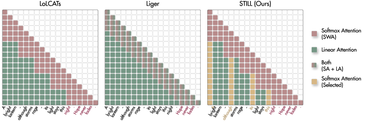
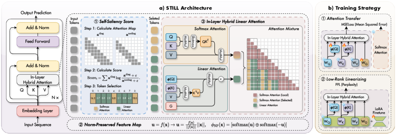
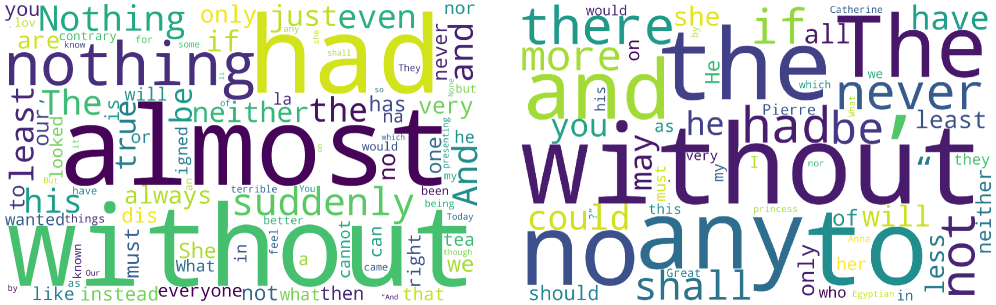

Why it matters왜 중요한가
"Recent tokens get softmax" is a heuristic, not a law — importance doesn't live at fixed positions.
"최근 토큰에 softmax"는 법칙이 아니라 휴리스틱이다 — 중요도는 고정 위치에 살지 않는다.
Training linear-attention LLMs from scratch costs trillions of tokens and still lags softmax. The practical alternative is linearization: take a pretrained Transformer, keep a little softmax, replace the rest with linear attention, and fine-tune briefly. Intra-layer hybrids (LoLCATs, Liger) do this with a sliding window — softmax for the last W tokens, linear attention for everything older. But the tokens that steer meaning — a "not" three sentences ago, the variable name from the top of the file — are exactly the ones a positional window evicts into the lossy linear summary. STILL's question: can we cheaply detect which tokens deserve softmax, regardless of where they sit?
선형 어텐션 LLM을 처음부터 학습하면 수조 토큰이 들고도 softmax에 뒤진다. 실용적 대안은 선형화: 사전학습 Transformer를 가져와 softmax를 조금만 남기고 나머지를 선형 어텐션으로 바꾼 뒤 짧게 미세조정한다. 층내(intra-layer) 하이브리드(LoLCATs, Liger)는 이를 슬라이딩 창으로 한다 — 마지막 W 토큰은 softmax, 더 오래된 건 전부 선형 어텐션. 그러나 의미를 조종하는 토큰들 — 세 문장 전의 "not", 파일 맨 위의 변수명 — 이 바로 위치 창이 손실 있는 선형 요약으로 퇴출시키는 것들이다. STILL의 질문: 위치와 무관하게 어떤 토큰이 softmax를 받을 자격이 있는지 싸게 감지할 수 있는가?

By the numbers핵심 숫자
(best prior: 50.8 · teacher: 68.0)선형화 후 MMLU
(기존 최고 50.8 · teacher 68.0)
above the teacher's 73.2MMLU 제외 평균 —
teacher(73.2) 상회
(Llamba needs 12B for less)학습 토큰
(Llamba는 12B로도 그 이하)
STILL vs LoLCATsS-NIAH-1 @4K, ≤512 예산
STILL vs LoLCATs
(even Mamba2-from-scratch: 44.7)확장 RULER @4K 평균
(스크래치 Mamba2도 44.7)
beyond 8K tokens8K 초과에서
메모리 / 디코딩 속도
In one diagram한 장의 그림
Idea: choose by saliency, preserve the norms아이디어: 중요도로 고르고, norm을 보존하라
Self-Saliency Score
For each token, compare its local softmax distribution with and without its own diagonal self-attention term; the divergence between the two is the score. Tokens whose removal reshapes attention are intrinsically salient. Crucially this needs only a sliding window — and empirically the local score is consistent with global relevance, so cheap local computation buys global routing. The chosen tokens? Overwhelmingly functional operators: negation, modality, quantifiers (Fig. 4 below).
각 토큰에 대해, 자신의 대각 self-attention 항을 포함한 로컬 softmax 분포와 제외한 분포를 비교한다; 둘의 발산이 점수다. 제거 시 어텐션이 재편되는 토큰이 본질적으로 중요하다. 핵심은 슬라이딩 창만으로 계산된다는 것 — 그리고 경험적으로 로컬 점수가 전역 관련성과 일치해, 싼 로컬 계산이 전역 라우팅을 산다. 선택되는 토큰은? 압도적으로 기능적 연산자: 부정·양상·양화사 (아래 Fig. 4).
Norm-Preserved feature map
Softmax attention is norm-aware: magnitudes modulate weights. But the learnable MLP in linear-attention feature maps rescales norms arbitrarily, so the linear branch operates on distorted pretrained features. NP-Map decouples direction from magnitude: u = f(x)/‖f(x)‖ · ‖x‖ — the MLP refines only direction, the pretrained norm is reinjected — then φNP = [softmax(u) ⊕ softmax(−u)], plus a gate for expressivity. Ablation: NP-Map +4.9, gate +5.8, saliency selection +6.7 points on BABILong.
softmax 어텐션은 norm 인지적이다: 크기가 가중치를 조절한다. 그런데 선형 어텐션 특징 사상의 학습형 MLP는 norm을 임의로 재스케일해, 선형 가지가 왜곡된 사전학습 특징 위에서 돌게 된다. NP-Map은 방향과 크기를 분리한다: u = f(x)/‖f(x)‖ · ‖x‖ — MLP는 방향만 다듬고 사전학습 norm을 재주입 — 그 뒤 φNP = [softmax(u) ⊕ softmax(−u)], 표현력을 위한 게이트 추가. Ablation: BABILong에서 NP-Map +4.9, 게이트 +5.8, 중요도 선택 +6.7점.

How it works어떻게 작동하나
- Score inside the window창 안에서 점수화While a token is in the sliding window it gets exact softmax anyway; its self-saliency is measured there for free-ish, from the with/without-diagonal divergence.토큰이 슬라이딩 창 안에 있는 동안은 어차피 정확한 softmax를 받는다; 그 사이 대각 포함/제외 발산으로 self-saliency를 사실상 공짜로 잰다.
- Delayed, chunk-wise routing지연된 청크 단위 라우팅When a chunk exits the window, rank its tokens; top-λ join the salient softmax cache, the rest are folded into the linear attention state — O(T log C) selection overhead, O(N) overall.청크가 창을 벗어날 때 토큰 순위를 매겨 상위 λ는 salient softmax 캐시로, 나머지는 선형 어텐션 상태로 접어 넣는다 — 선택 오버헤드 O(T log C), 전체 O(N).
- Attend twice, cheaply두 번, 싸게 어텐션Each query does sparse softmax over (window + selected cache) and gated linear attention over the summarized rest; outputs are mixed in-layer.각 쿼리는 (창 + 선택 캐시)에 희소 softmax, 요약된 나머지에 게이트 선형 어텐션을 수행; 출력은 층 안에서 혼합된다.
- Distill, then LoRA증류 후 LoRAStage 1 freezes the teacher and matches attention maps (MSE); stage 2 fine-tunes with LoRA — 20M tokens of Cleaned Alpaca at length 1024, total 0.04B.1단계는 teacher를 얼리고 어텐션 맵을 맞춘다(MSE); 2단계는 LoRA 미세조정 — 길이 1024의 Cleaned Alpaca 20M 토큰, 총 0.04B.
Results — the MMLU cliff disappears결과 — MMLU 절벽이 사라진다
| Method | PIQA | ARC-c | Hella. | MMLU | Avg (w) | Avg (wo) |
|---|---|---|---|---|---|---|
| Llama 3.1 8B (teacher) | 81.1 | 55.1 | 79.3 | 68.0 | 74.2 | 73.2 |
| LoLCATs | 80.9 | 54.7 | 76.6 | 50.8 | 69.9 | 73.7 |
| Liger-GLA | 80.5 | 55.6 | 75.4 | 46.9 | 68.3 | 72.6 |
| STILL | 81.3 | 56.7 | 79.0 | 61.3 | 72.5 | 74.7 |
Long context is where position-based routing collapses: on extended RULER at 4K, STILL averages 47.9 against LoLCATs' 7.2 and Liger's 2.1 — above even from-scratch Mamba2 (44.7). BABILong QA5 at 4K: 24 vs 6. The trend holds across Llama 3.2 1B/3B and Mistral 7B teachers.
위치 기반 라우팅이 무너지는 곳이 장맥락이다: 4K 확장 RULER에서 STILL 평균 47.9 vs LoLCATs 7.2·Liger 2.1 — 스크래치 학습 Mamba2(44.7)보다도 높다. BABILong QA5 @4K: 24 vs 6. 이 경향은 Llama 3.2 1B/3B·Mistral 7B teacher에서도 유지된다.

What to take away그래서, 가져갈 것
Routing is the bottleneck, not the kernel. Same budget, same training — just choosing which tokens keep softmax turns 7.2 into 47.9 on RULER. The linearization field was optimizing the wrong knob.
병목은 커널이 아니라 라우팅. 같은 예산·같은 학습에서 어떤 토큰이 softmax를 유지할지만 바꿔도 RULER 7.2가 47.9가 된다. 선형화 분야는 엉뚱한 손잡이를 돌리고 있었다.
Function words are the skeleton. The saliency score independently rediscovers linguistics: negation/modality/quantifiers carry the widest scope and need exact attention. A lovely interpretability result hiding in an efficiency paper.
기능어가 뼈대다. 중요도 점수가 언어학을 독립적으로 재발견한다: 부정·양상·양화사가 가장 넓은 범위를 지니며 정확한 어텐션을 요구한다. 효율 논문에 숨은 사랑스러운 해석가능성 결과.
Norms are part of the pretrained contract. Letting an MLP rescale feature magnitudes silently breaks softmax's norm-awareness — reinjecting ‖x‖ is nearly free and worth ~5 points. Echoes the R-gate lesson from TriAttention: respect the model's own statistics.
norm도 사전학습 계약의 일부. MLP가 특징 크기를 재스케일하게 두면 softmax의 norm 인지성이 조용히 깨진다 — ‖x‖ 재주입은 거의 공짜인데 ~5점 값어치다. TriAttention의 R-게이트 교훈과 공명: 모델 자신의 통계를 존중하라.
0.04B tokens is the real headline. Matching (and partly beating) a 15T-token teacher with a 375,000× smaller adaptation budget makes linearization an afternoon job, not a pretraining run.
진짜 헤드라인은 0.04B 토큰. 15T 토큰 teacher를 375,000× 작은 적응 예산으로 따라잡고(일부는 추월) — 선형화가 사전학습이 아니라 반나절 작업이 된다.